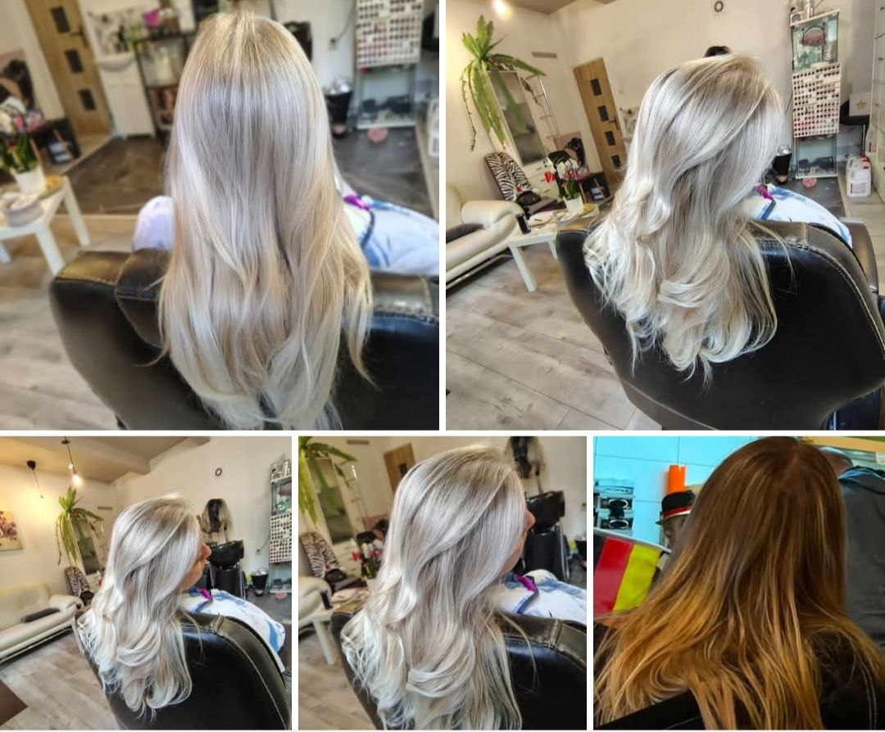

Dámsky strih
Konzultácia, umytie, strih podľa typu vlasov a finálna úprava.

Dámske, pánske a detské účesy
Dopraj im starostlivosť, ktorú si zaslúžia, v príjemnom kaderníctve s osobným prístupom.
Na správy odpovedáme zvyčajne do 24 hodín počas pracovných dní.
Vitajte
Kaderníctvo zamerané na kvalitu, kreativitu a spokojnosť zákazníkov. S viac ako 15-ročnou praxou v oblasti strihov, farbenia a stylingu ponúkam širokú škálu služieb pre dámy, pánov aj deti.
Služby
Konzultácia, umytie, strih podľa typu vlasov a finálna úprava.
Celkové farbenie, tónovanie, zakrytie odrastov a odborné odporúčanie odtieňa.
Jemné zosvetlenie, prirodzené prechody a starostlivosť po farbení.
Klasický aj moderný pánsky strih, úprava kontúr a rýchly styling.
Úprava vlasov na oslavy, fotenia, stužkové, svadby a výnimočné dni.
Výživa, masky a ošetrenia pre suché, poškodené alebo farbené vlasy.
Premeny

Vhodné pre klientky, ktoré chcú sviežejší vzhľad a prirodzene pôsobiacu farbu.

Odtieň sa vyberá po konzultácii podľa stavu vlasov, očakávaní a údržby doma.

Účes sa prispôsobí typu vlasov, šatám aj tomu, aby vydržal počas dňa.
Galéria
Všetky práce sa dajú nájsť na Facebooku.
Otvoriť FacebookRecenzie
Vybrané sú iba verejne dostupné recenzie s hodnotením 5 z 5.
„Milujem ju! Je najlepšia vo svojom odbore. Z čiernych vlasov mi spravila krásnu hnedú.“
„Kaderníčka mi robila melír a výsledok je nádherný, presne taký, ako som si priala.“
„Vrelo odporúčam Petru Kaderničku ak ide o strihaní alebo o farbení.“
„Najlepšia kaderníčka! Nikdy som od nej neodchádzala sklamaná.“
„Urobila mi farbu a melír ešte lepší a prirodzenejší, aký bol na vzorovej fotke.“
„Pre moje vlasy som si lepšiu kaderníčku želať ani nemohla, odporúčam.“
FAQ
Najrýchlejšie telefonicky, správou cez sociálne siete alebo kontaktným formulárom na stránke.
Áno, služby sú určené pre dámy, pánov aj deti.
Pri výraznej zmene farby, melíre alebo balayage je konzultácia odporúčaná, aby sa zhodnotil stav vlasov a vhodný postup.
Na správy odpovedáme zvyčajne do 24 hodín počas pracovných dní.
Kaderníctvo nájdete na adrese Pri Gymnáziu 2, 940 02 Nové Zámky.
Otváracie hodiny
Kontakt
Vyplň formulár a otvorí sa pripravený e-mail, alebo nás kontaktuj priamo telefonicky či e-mailom.
Mapa